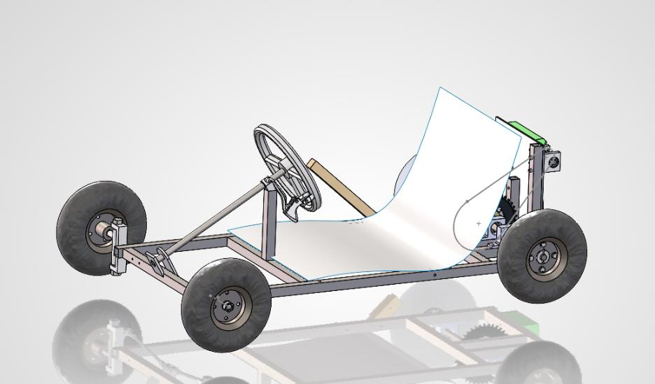
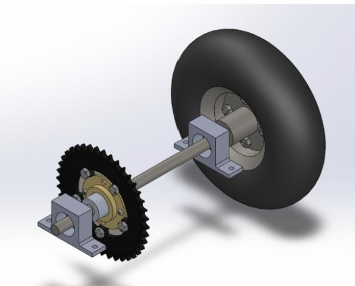
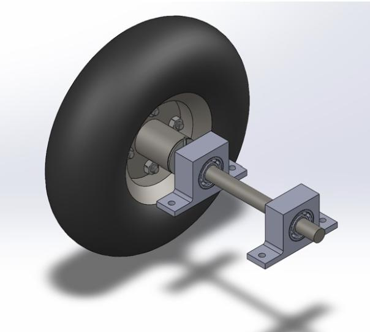
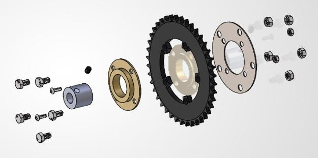

Our team's goal is to build a vehicle powered by a Ryobi cordless drill. It needs to support one driver and complete several maneuverability and load-bearing competitions without failing, and along the way we present a PDR and CDR to the manufacturing engineers in the machine shop for approval.
Progress
We've completed our manufacturing reviews with the campus engineers and have begun purchasing and fabricating components. Next up is testing the vehicle.
Requirements
- Minimum of three load-bearing wheels
- Shorter than 7 ft, under 50 lbs
- No modifications to the drill itself
- Custom-manufactured components for the vehicle
- Total cost under $200
My role
Our team of six is split into four roles: a project manager, two CAD engineers, two manufacturing engineers, and me as the systems and testing engineer. So far, I've drafted the overall timeline for the semester, covering meetings with engineers, part acquisition, and manufacturing dates, and written our requirements sheet, defining what the vehicle shall do versus what it should do.
I'm also responsible for the drivetrain. We're using a freewheel and chain ring setup, linked by a chain to the drill sprocket, to drive the right rear wheel.